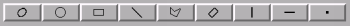

These are (running from left to right), an ellipse, a circle, an axis aligned rectangle, a straight-line, a polygon with movable vertices, a re-orientable rectangle, a column (one pixel wide), a row (one pixel wide) and a single pixel.
To actually draw a region just press on one of the shape buttons and then put your mouse cursor over the image. Press and hold down button 1 and then move the mouse. The action you will now get depends on the type of region.
To complete a polygon double click button 1.
You can blank out parts of the image by pressing the "Blank selected" or "Blank all" buttons. The new image that is generated is either displayed in a new clone window, or in the existing display.
Use the "Extract selected" and "Extract all" buttons. Extra space around the useful parts of your images can now be removed using the "Auto crop" button.
Hints:
If you want to display the results of a blank or extract operation in the existing window then open the "Options" menu and make sure that the "Display new image in existing window" option is selected.
Use the buttons "Stats selected" and "Stats all". The statistics for either just the selected regions or all the displayed regions are then calculated and displayed in the text output window. Note that any bad values in the image are excluded from these statistics, so the number of pixels reported is the number of non-bad ones, not the total number in the region.
The statistics can be saved into a plain text file. This just writes the contents of the text output window to the file named in the "Stat results file:" entry.
Just put your mouse cursor over the region you want to move and press button 1. The region should now become "selected" (you can see this as the colour changes and grips appear). If you hold down button 1 and then move the mouse the shape will move.
First select the region that you want to adjust. Little boxes should now appear on its locus (these are called grips). Place your cursor over a grip, press and hold down button 1 and then move your mouse. The region should now adjust its shape.
Open the "File" menu and select "Save ARD description...". A file selection window should now appear and you can enter a new name or overwrite an existing file. The description of the regions on the image is stored in ARD format (Ascii Region Description -- SUN/183). Or exported as an IVOA Multi-Order Coverage (MOC) region. These can be re-read into GAIA using the MOC toolbox.
Use the "Read ARD description..." option in the "File" menu. Note that in general only ARD descriptions created by this toolbox will be restorable. You may be able to read files created by programs such as KAPPA ARDGEN, but only simple ones.
If a region completely overlays another then it may not be possible to select it (remember you can select a region anywhere within its boundaries). To get around this problem to need to "lower" the region below the one that is overlaying it. To do this place your cursor over the obscuring region and press button 3. A menu should appear. Select the option "Lower selected item(s)" to then try to select the region you really want to move.
Place your cursor over the region you want to delete, select it (by pressing button 1), then press button 3. A menu should appear. Choose the "Delete selected item(s)" option.
Just double click over a region to get a details window that shows its values. You can modify these and then press return to change the region.
Just select the region and press button 2 over a grip. A new point should appear which you can now adjust into the correct place.
Just select the region and press button 3 over the grip you want to delete. You cannot have less than 3 points.
Just hold down the Control button while selecting each region.
This toolbox makes use of several external programs that perform services on the displayed image. These are: KAPPA ARDMASK, GAIA ARDSTATS and GAIA AUTOCROP. You should note that these programs work on the disk-resident image data not the displayed data.